I spent eighteen months at the Children's Justice Center. I worked nights. I had a lot of free time and spent most of it reading, listening, or learning. This is roughly 90% of the titles I consumed during that period.
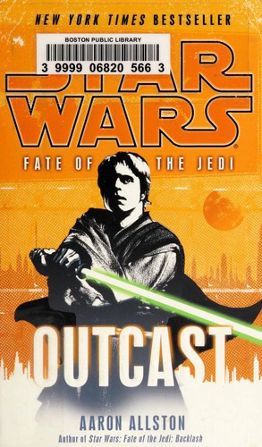
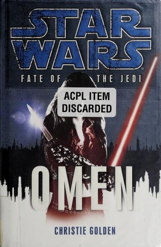
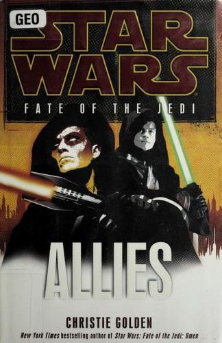
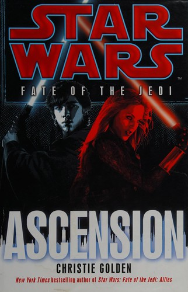
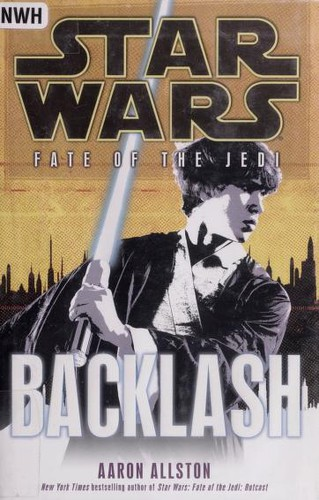
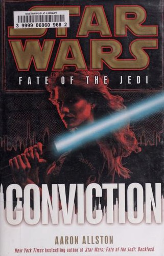
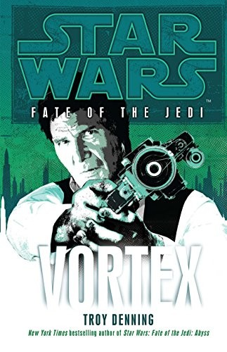
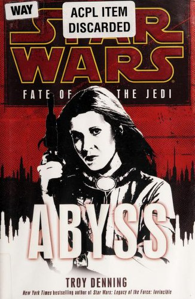
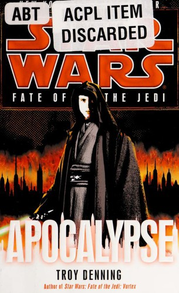
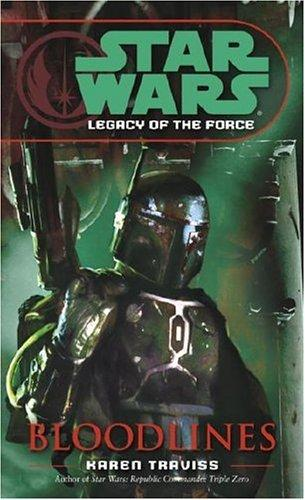
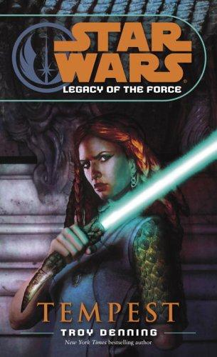
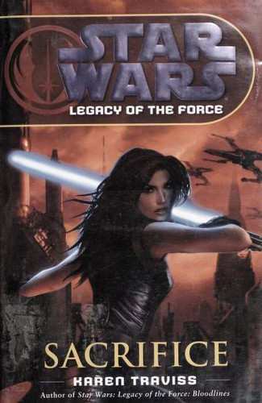
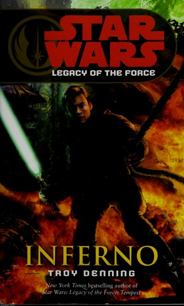
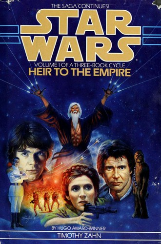
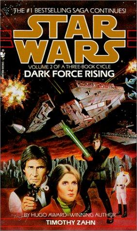
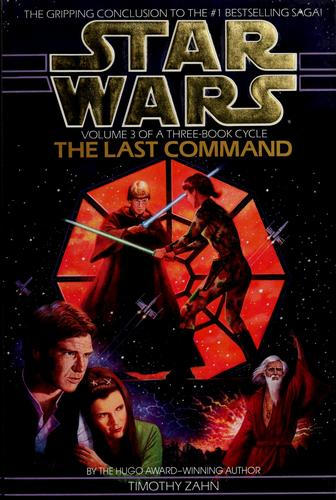
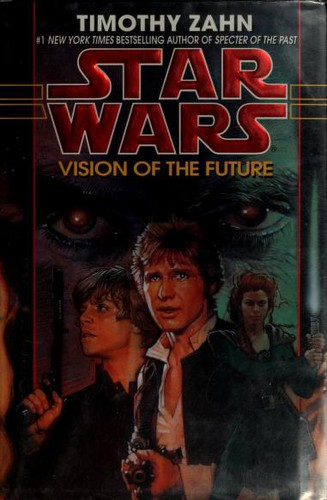
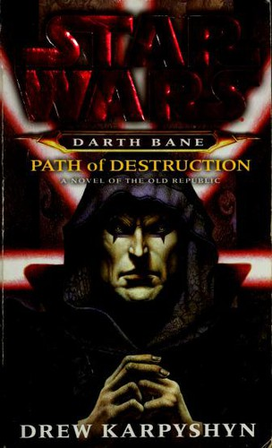
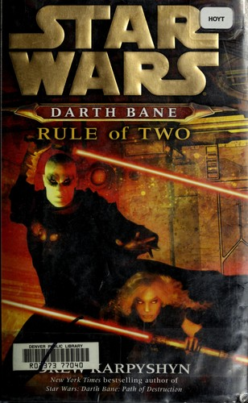
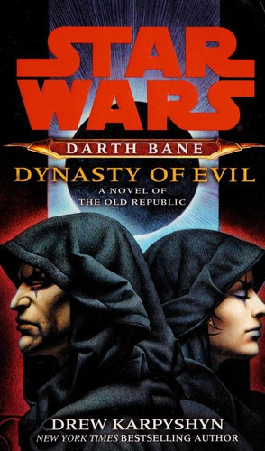
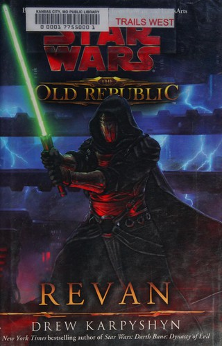
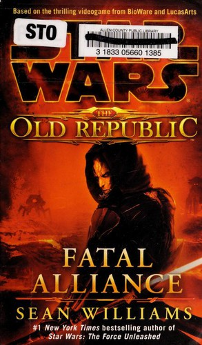
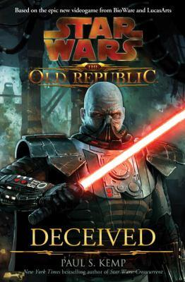
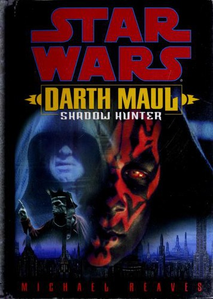
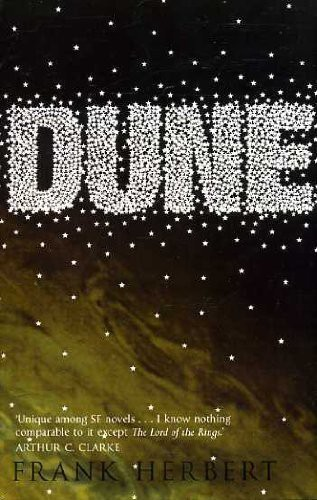
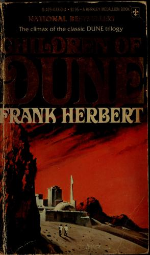
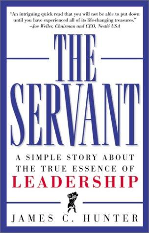
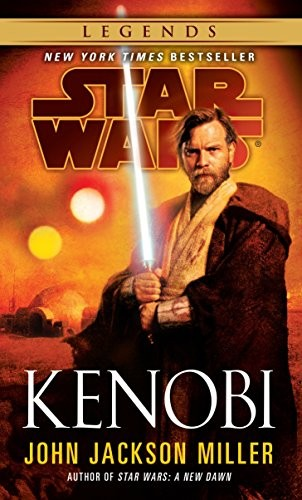
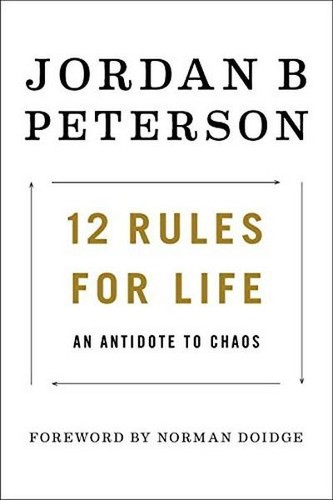
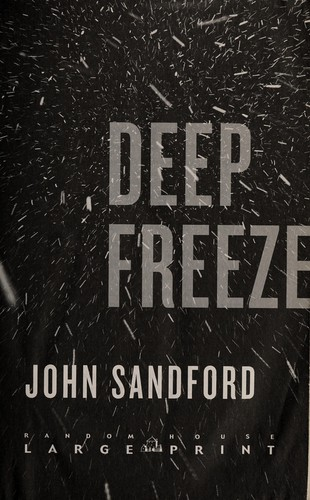
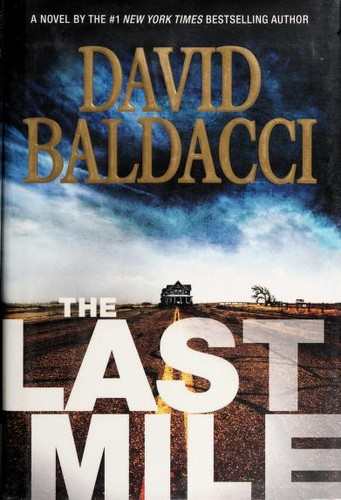
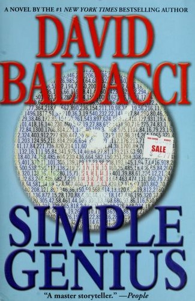
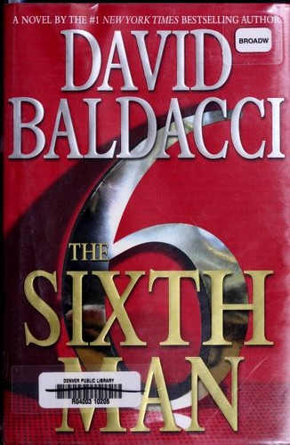
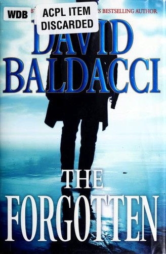
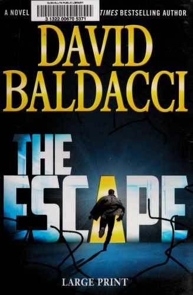
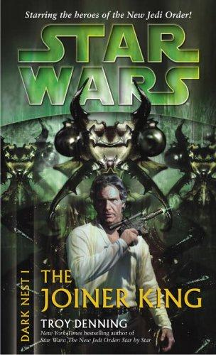
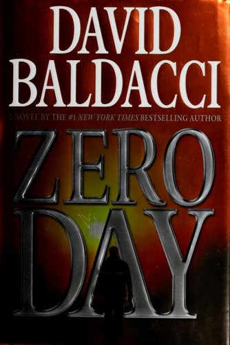
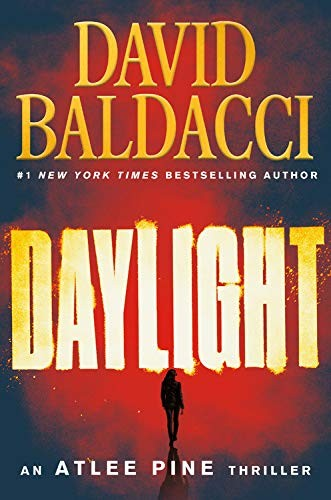
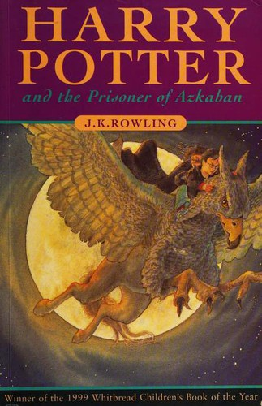
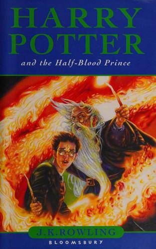
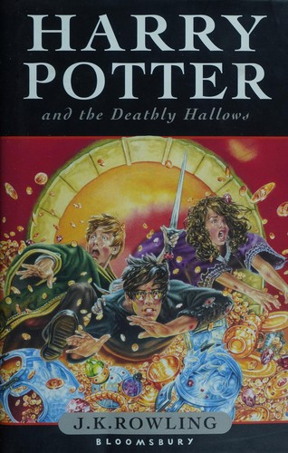
One of the most compelling Star Wars stories I've read that establishes an entire cast of classic characters that live on throughout the cannon following this book. The plot was very funny and introduces one of the best written antagonists in all of science fiction. This book is so good it established and entire cannon and was the basis for the star war expanded universe
This book kept me on my toes and raised the stakes throughout. I enjoyed how well this book portrayed thrawn as a legitimate threat and really drove home how fragile the new galactic government's hold on the galaxy truly was.
The plot is extremely engaging and the stakes felt so high. The antagonists in this book and series were so much fun and both felt like a genuine threat to the galaxy until the very end. The book always manages to portray Thrawn in a way that keeps the reader impressed and awed of his character while simultaneously rooting against him.
Excellent follow up to his previous series that further develops the character expertly.
Great plot that left that had lasting repercussions for the rest of the EU. Great book and character development
I very much enjoyed the Darth bane characterization and the way it humanized his journey into the dark side. This book truly made the with feel like an order of actual characters vs the typical bad guy archetype.
While I enjoyed how this book fleshed out zannahs character and set her up for the next book I felt the book overall fell a little flat and was by far the weakest entry into the series. That said I did enjoy the action sequence vs the Jedi toward the end.
The pacing of this book especially the end was a lot of fun and felt like a fuse burning at both ends, I enjoyed the ambiguous ending as well as the implications for the greater Star Wars universe.
A fun story with compelling characters that serves well to fill out the old republic timeline. I very much enjoyed the dual plot lines and how they intersect the main characters. The ending however was a let down and felt heavily constrained to the established lore. Basically the ending battle was pigeonholed into the predetermined result of the video games that followed it and felt at odds with the book itself.
The plot of this book is somewhat slow and can feel dense at times, the content of the story and character development it does for the movies is tremendous and makes this book feel like required reading to fully understand the prequel movies plot lines. Also this book goes really well with the Darth bane trilogy as it fleshes out the order of the sith and tell the story of the end of his line of succession.
Such a fun story, I really enjoyed this thriller / jailbreak story set in the Star Wars unviverse and appreciated how it did not rely so heavily on "the force" or the greater plot of the cannon. It was just a fantastic book that took full advantage of the Star Wars setting and pre established characters.
Felt like extra content for the sake of extra content. Easily shippable fan service for readers who want more after finishing the fate of the Jedi series. With hollow references throughout and a cheesy storyline.
Excellent character study of who obi wan kenobi has become in the aftermath of the movies and a very fun story that makes it clear who he must become to serve the greater good moving forward.
The setting and tone of the plot are fun but mace windu is not my favorite character and the plot seems like it has a hard time deciding what it wants to be. That being said I did enjoy how this story seems to be an omage the the classic film apocalypse now set in the Star Wars universe.
Easily a classic. Although dense with the expectation that the reader will take the time to learn about the world the characters inhabit. The character, setting, and plot development were all absolutely fantastic!
Good follow up to the first book and continues do give the characters even more depth. The plot is definitely weaker than its predecessor though.
Great for fan service but it's very obvious that quality in the series begins to fall off from this point
The book feel very obviously dated but the concepts and information is extremely valuable and would benefit anyone to study and impliment.
I thoroughly enjoyed this book and listened multiple times. The story is structured very well and succeeds in helping the reader to identify with the authors faults as he learns how to become a better leader throughout an engaging story.
Timeless information presented in an interesting manner. Somewhat hard to follow at times due to its age and the way it's organized. The content itself was extremely useful and immediately actionable. I also appreciated how throughly it explained its principles by fleshing out each examples through multiple different perspectives and examples.
While this book did intrigue me throughout and cause me to consider its meaning deeper, it ultimately felt self serving to the author and very much gave me the impression that the entire book was written as an exercise of his ego.
Solid mystery novel that expertly introduces one of my favorite characters of all time Virgil flowers. While not super complex the plot remains engaging and the characters feel real.
Once the action kicks in it's not a bad ride and I enjoyed following along, the characters and their development felt so shallow and boring. Also it's very obvious that the author struggles to write female characters and with the lead being a female this is a serious negative for the book and series as a whole. Honestly his female characters feel like men who he later decided should be women so he changed their names.
Very shallow, even though it was a short story the plot itself offered absolutely no depth. It was written as if the only focus were practicing writing an action sequence.
Probably the last Baldacci novel I read for a while. His plots are too similar and somewhat shallow. The books fill the role of being an easy passive listen but are simple and sometimes not very engaging. The action sequences however are enjoyable.
The a plot was fun and engaging, I enjoyed the inclusion of John Puller in the investigation. However the book abruptly changes lanes once the a plot is resolved and steps back into the longstanding mystery of her missing sister. The shift is somewhat jarring and taking up the last bit of the book. It feels more like an afterthought trying to tie up loose ends than a cohesive part of the book. The entire section felt like it could've been better left for the next book.
This book left me dissatisfied as most of the twists felt shallow and predictable
The story was a fun ride and it was written in a way that built the stakes extremely high, however anytime something major happened it was a function of nature and left me with the feeling that nothing the characters did mattered whatsoever. Especially the ending, I was absolutely left with the feeling that the ending was lazy and the authors relied solely on the idea of deus ex machina.
Format was super engaging but the multiple plots were somewhat uneven. Even though they were all extremely deep, some were far less enjoyable and pulled me out of the experience from time to time.
I enjoyed the different style of mystery from the perspective of Jack with him not being a detective. Also I enjoyed the difference of it being more of a thriller as well.
I do not like Stephen Kings writing style. He rambles on and on in a droning self indulgent manner.
Predictable easy listen. Nothing special but not bad. I found myself my annoyed that this devolved into another hostage situation like the sixth book which I listens too just before. However I do enjoy enjoy that this series strays away from the typical murder mystery.
Well written, thematically complex, deep characters. I enjoyed this book overall but was somewhat disappointed to realize that I had deciphered the twist very early on. Which could be a positive as well because the hints were very subtle. The author does really well to bury them underneath the narrators unreliable accounts
I enjoyed the different perspective on the traditional spy thriller. The story was mostly engaging and the turns kept me interested throughout.
"I had a lot of free time and spent most of it reading, listening, or learning."